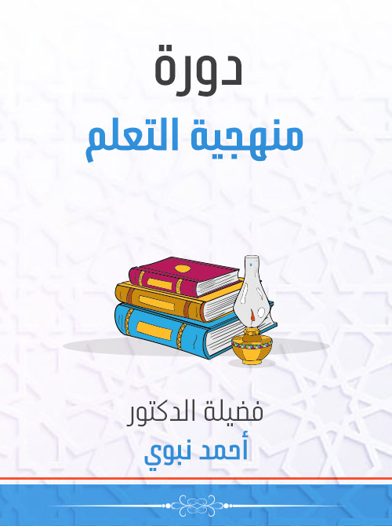
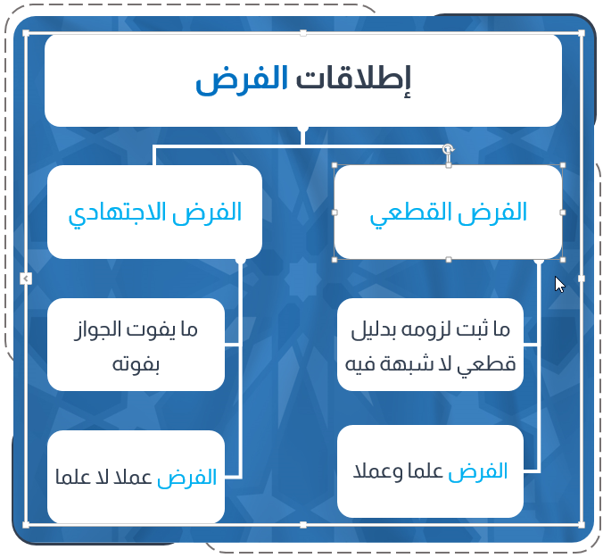
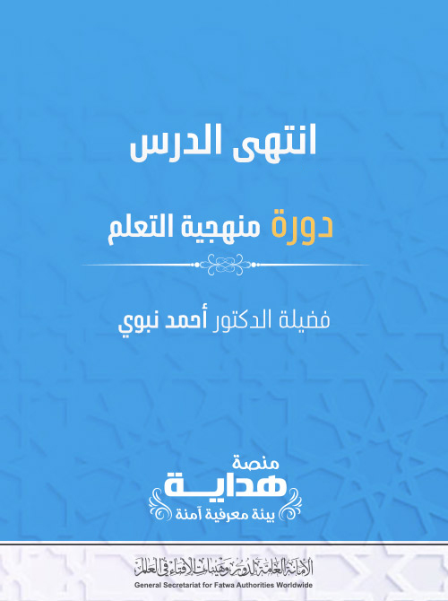

سبب فرضية الوضوء

الوضوء لغة وشرعًا
الوضوء في اللغة : من الوَضاءة ؛ وهو الحسن .
.
وفي الشرع: الغَسل والمسح في أعضاء مخصوصة .
وفي المعنى الشرعي المعنى اللغوي ، لأنه يحسن به الأعضاء التي يقع فيها الغَسل والمسح؛ فالغَسل: هو الإسالة، والمسح: الإصابة .
.
وفي الشرع: الغَسل والمسح في أعضاء مخصوصة .
وفي المعنى الشرعي المعنى اللغوي ، لأنه يحسن به الأعضاء التي يقع فيها الغَسل والمسح؛ فالغَسل: هو الإسالة، والمسح: الإصابة .
وسبب فرضية الوضوء: إرادة الصلاة مع وجود الحَدَث .
لقوله تعالى : { إِذَا قُمْتُمْ إِلَى الصَّلَاةِ فَاغْسِلُوا} [المائدة : 6 : 6 ] .
] .
قال ابن عباس : معناه إذا أردتم القيام إلى الصلاة وأنتم محدثون .
] .
قال ابن عباس : معناه إذا أردتم القيام إلى الصلاة وأنتم محدثون .
تعريف الفرض وإطلاقاته
لغة: التقدير .
التقدير .
شرعًا: ما ثبت لزومه بدليل قطعي لا شبهة فيه .
أصل الغَسل والمسح في أعضاء أصل الغَسل والمسح في أعضاء الوضوء .
الوضوء .
وهو الفرض علمًا وعملًا، ويسمى الفرض القطعي .
 كثيرًا ما يطلق الفرض على ما يفوت الجواز كثيرًا ما يطلق الفرض على ما يفوت الجواز بفوته .
كثيرًا ما يطلق الفرض على ما يفوت الجواز كثيرًا ما يطلق الفرض على ما يفوت الجواز بفوته .
.
غسلِ ومسحِ مقدارٍ معين غسلِ ومسحِ مقدارٍ معين فيها .
.
وهو الفرض عملًا لا علمًا، ويسمى الفرض الاجتهادي .
التقدير .
شرعًا: ما ثبت لزومه بدليل قطعي لا شبهة فيه .
أصل الغَسل والمسح في أعضاء أصل الغَسل والمسح في أعضاء الوضوء .
الوضوء .
وهو الفرض علمًا وعملًا، ويسمى الفرض القطعي .
كثيرًا ما يطلق الفرض على ما يفوت الجواز كثيرًا ما يطلق الفرض على ما يفوت الجواز بفوته ..
غسلِ ومسحِ مقدارٍ معين غسلِ ومسحِ مقدارٍ معين فيها .
.
وهو الفرض عملًا لا علمًا، ويسمى الفرض الاجتهادي .

